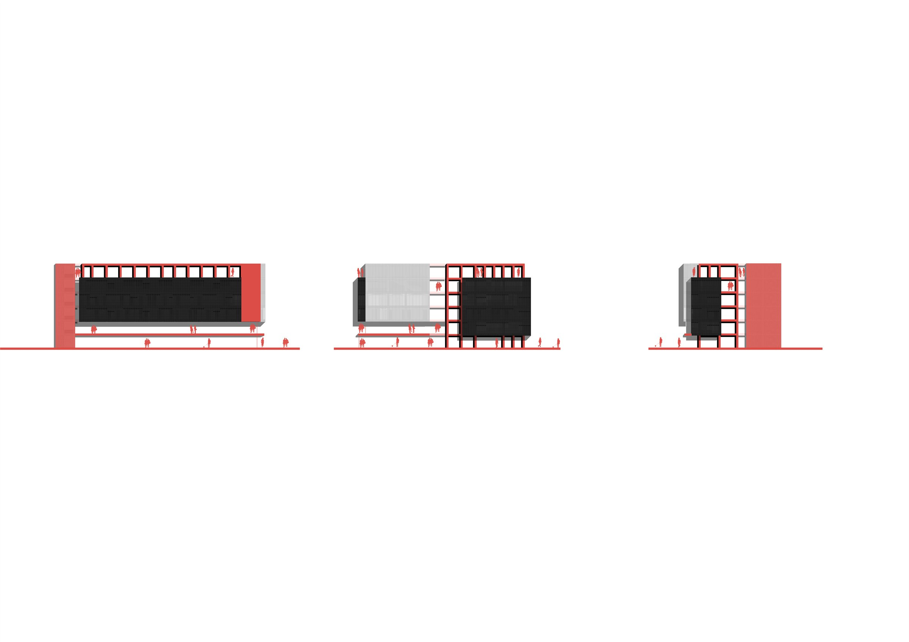
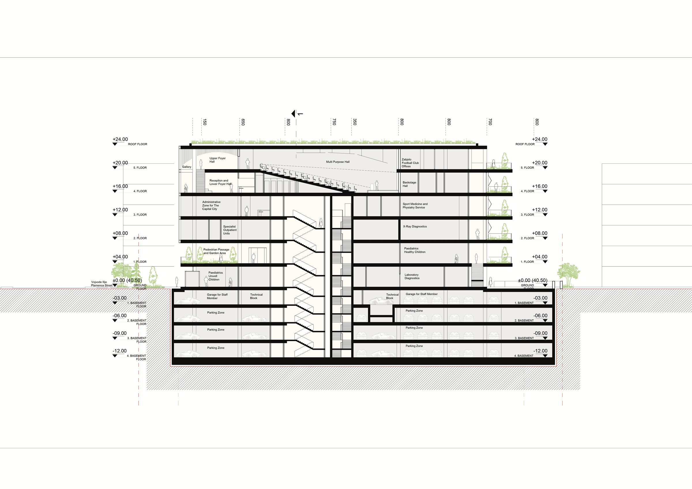
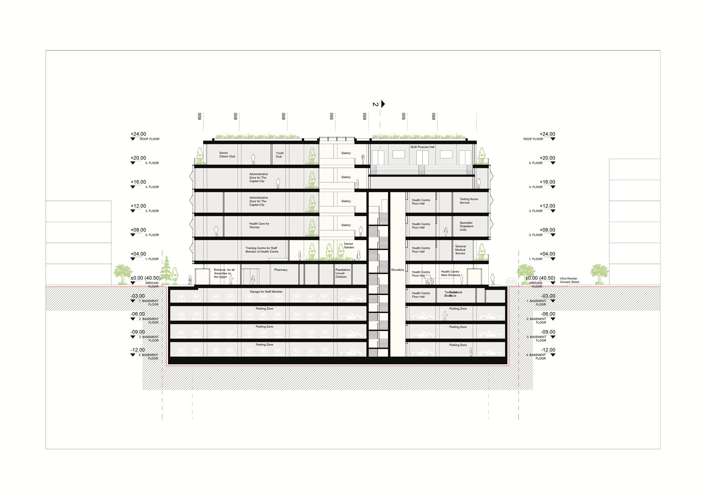
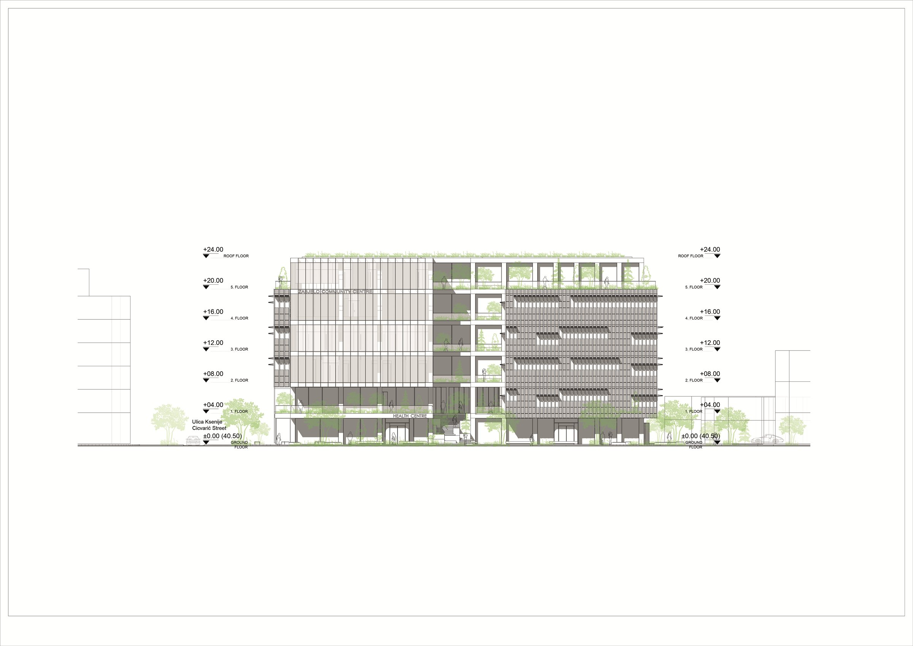
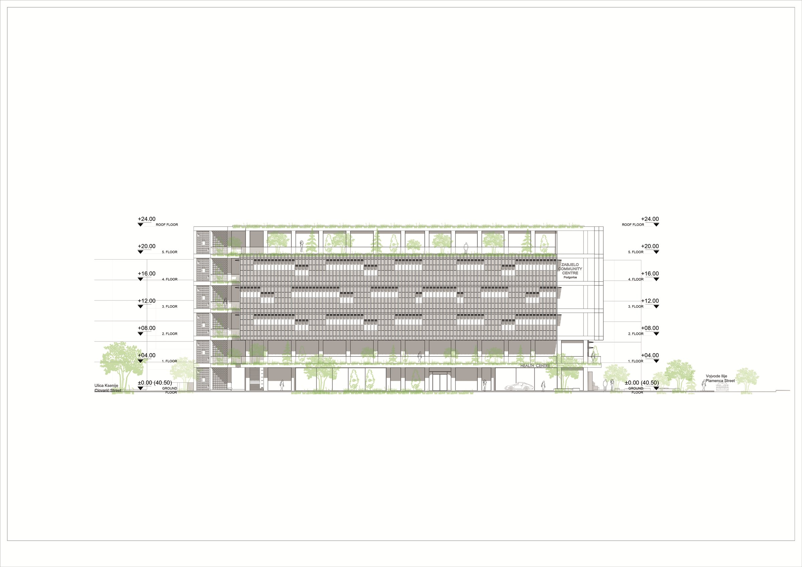
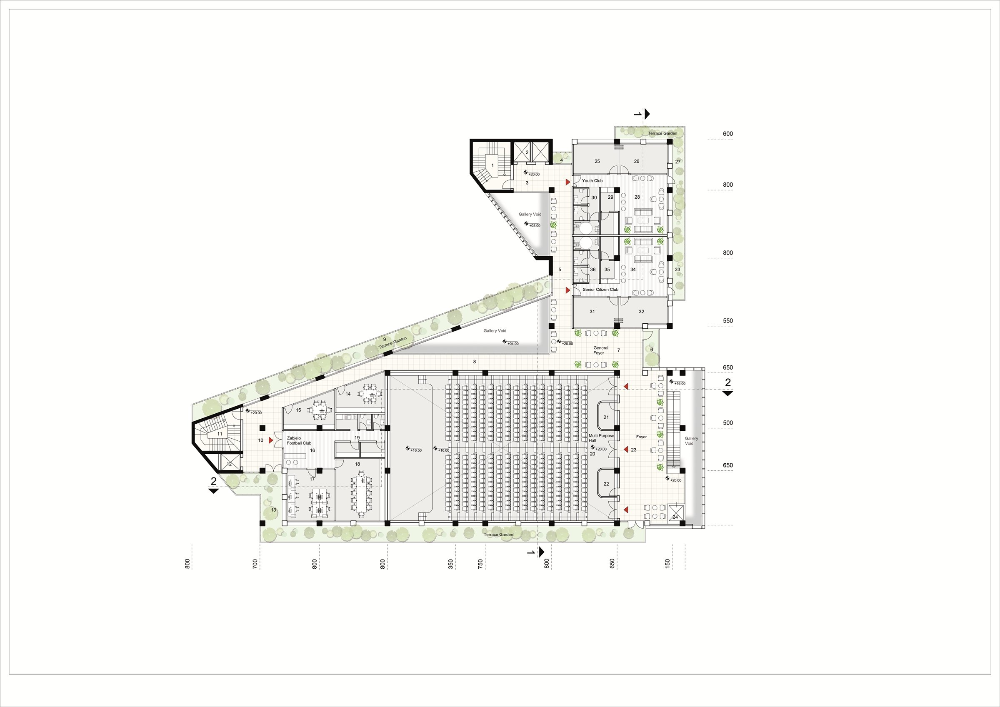

01 Podgorica, Karadağ — 2026
Zabjelo Kültür ve Toplum Merkezi
Kamusal alanı zemin kotundan koparıp birinci kata taşıyan; iki sokağı yapının kalbinde bir pasajla birleştiren karma kamusal yapı önerisi.

Konsept Tasarım Yaklaşımı
Tasarım Kriterleri
Projenin ana tasarım kriterleri, kamusal bir yapının kentle kurması gereken ilişki üzerinden dokuz başlıkta tanımlandı.
Mekânsal Dağılım
Bina programını arazi bütününe uyumlu, dengeli ve optimize edilmiş bir biçimde dağıtmak.
Kamusal Kimlik
Yapının kamusal niteliği gereği dışa dönük, hareketli ve dinamik bir kütle ile cephe plastiği üretmek; davetkâr bir mimari dil oluşturmak.
Fonksiyonel Akış
Farklı işlevlerin birbirini engellemeden, işletme konforu yüksek bir ahenk içinde çalışmasını sağlamak.
Düşey Sirkülasyon
Kamusal sirkülasyonu ve yaya hareketini sadece zemin katla sınırlamayıp üst katlara da etkin biçimde taşımak.
Kesintisiz Yeşil Dokusu
Peyzajı sadece zemin kat düzleminde bırakmayıp kat bahçeleri ve teraslar aracılığıyla üst kotlara taşımak; yeşil sürekliliğini tüm bina çeperinde hissettirmek.
Sürdürülebilirlik ve Yönelim
Mikroklimatik verileri ve bina yönelimini referans alan cephe tasarımlarıyla pasif sürdürülebilirlik ilkelerini hayata geçirmek.
İç Mekân Kurgusu
Tasarlanan atriumlar, galeri boşlukları ve iç bahçelerle kullanıcı–mekân ilişkisini güçlendirirken yapının doğal havalandırma ve aydınlatma performansını desteklemek.
Canlı Kamusal Alan
Nitelikli bir peyzaj tasarımı ile bina çeperinin gün boyu yaşayan, aktif bir kamusal odak noktası hâline gelmesini sağlamak.
Kütle Gelişimi
Sekiz Adım
Kütle, arsa sınırından başlayıp yeşil sürekliliği ve kamusal geçirgenliği adım adım kazanarak son biçimine ulaşıyor.


Arsa sınırı ve yapılaşma izi.
Vaziyet Planı Kararları
İki Aks
Doğu Aksı — Vojvode Ilije Plamenca Bulvarı
Bu aks, yapının ana yaya ve toplu taşıma erişim yüzü olarak kurgulandı. Bulvar sınırındaki geniş çekme mesafesi, projenin "vitrini" niteliğinde nitelikli bir peyzaj alanı olarak tasarlandı. Bu cepheden, üst kat fonksiyonlarına hizmet eden lobi girişinin yanı sıra birinci kata doğrudan bağlanan bir kamusal merdiven yer alıyor. Sağlık birimlerine bağlı eczane ve pediatri bölümlerinin bağımsız girişleri de bu bulvar cephesinden sağlandı.
Güney Aksı — Ulica Ksenije Cicvarić
Yapıya araçla ulaşım, lojistik servis ve yanaşma stratejileri için bu sokak referans alındı. Sağlık merkezinin ana girişi bu cephede konumlandırılarak bir araç indirme-bindirme alanı ve devamında kapalı otopark girişi düzenlendi. Sokak, aynı zamanda tüm işlevlerin servis ve lojistik bağlantılarını organize ediyor.


Pasaj Kurgusu
Birinci Katta Sokak Bağlantısı
Zemin katta geniş kamusal boşluk üretilemeyince, kamusal alanın kendisi birinci kata taşındı.
Yoğun bina programı nedeniyle zemin katta geniş kamusal boşluklar oluşturulamıyordu. Söz konusu mekânsal kısıt, kamusal alanın birinci kata taşınması fikrini doğurdu. Vojvode Ilije Plamenca Bulvarı ile Ulica Ksenije Cicvarić Sokağı, tasarlanan kamusal merdivenler vasıtasıyla birinci katta bir "pasaj" mantığıyla birbirine bağlanıyor.
Kurgulanan bu düşey ve yatay aks, yapının kentle ve yakın çevresiyle kurduğu diyaloğu üst düzeye çıkarmayı hedefliyor. İçine kapanık bir kütle yerine dışa dönük, dinamik ve geçirgen bir mimari üretme hedefi doğrultusunda, iki sokak yapının kalbinde bir araya getirildi.


Fonksiyon Dağılımı
Sosyal ile Sağlığın Ayrışması
Projedeki sosyal işlevler, kamusal hareketliliğin en yoğun olduğu doğu — bulvar — cephesinde toplandı. Bu doğrultuda çok amaçlı salonun fuayesi de bulvara yönlendirildi ve dışarısı ile olan ilişkiyi güçlendirmek için cam giydirme cephe olarak tasarlandı.
Gençlik ve yaşlılar kulüpleri, en üst kattaki geri çekilmiş terasların hemen önünde kurgulanarak bulvar manzarasına hâkim kılındı. Katlardaki tüm işlevleri birbirine bağlayan ortak sosyal alanlar da bulvar cephesinde yer alıyor.
Sağlık birimleri ise araç akışının olduğu güney yönüne yerleştirildi; böylece bulvarın yoğun hareketliliğinden ve gürültüsünden uzak, sakin bir bölgede çözüldü.




İç Mekân
Atrium ve Galeriler
Atriumlar, galeri boşlukları ve iç bahçeler; doğal havalandırma ve aydınlatmayı taşırken katlar arası görsel sürekliliği de kuruyor.


Çizimler




